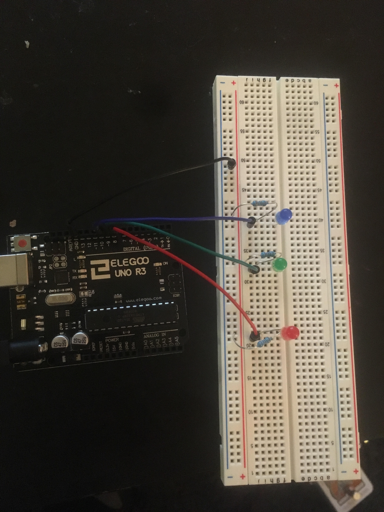
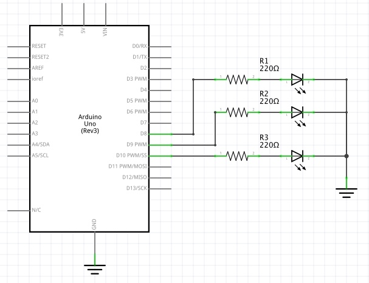

Blink
Assignment: Create a circuit with 3 independently blinking LEDs
Image: Circuit

Gif: Circuit Operation

Circuit Schematic

Code
//This program creates a little light show using red, green, and blue LEDS
//It was originally programmed using distinct loops for each LED, but I opted to
//put them on the same timer to create a synchronized 'show.'
//This is obviously not the most efficient way to do this.
//Define pin numbers for red, green, and blue LEDs for readability
#define RED 8
#define GREEN 9
#define BLUE 10
//Incrementing variable, manages LED timing
int ticks = 0;
//Defines length of one blink "cycle"
int MAX_TICKS = 17;
//Length of one tick in ms
int TICK_LENGTH = 500;
//Provides the tick counts at which the three LEDs will turn on
int RED_ON[] = {0,3,7,9,13,16};
int GREEN_ON[] = {1,4,7,9,12,15};
int BLUE_ON[] = {2,5,7,9,11,14};
//Number of flashes for each LED per cycle
//Used to iterate through loops
int NUM_FLASHES = 6;
//Set the red, green, and blue pins to output mode
void setup() {
pinMode(RED, OUTPUT);
pinMode(GREEN, OUTPUT);
pinMode(BLUE, OUTPUT);
}
void loop() {
//These 'if' statements turn on each LED if the tick counter is one of their
//defined "turn on" values and turn off each LED after the 1 has elapsed
//Turn on RED LED
if(within(ticks, RED_ON))
digitalWrite(RED, HIGH);
//Turn off RED LED
if(within(ticks-1, RED_ON))
digitalWrite(RED, LOW);
//Turn on GREEN LED
if(within(ticks, GREEN_ON))
digitalWrite(GREEN, HIGH);
//Turn off GREEN LED
if(within(ticks-1, GREEN_ON))
digitalWrite(GREEN, LOW);
//Turn on BLUE LED
if(within(ticks, BLUE_ON))
digitalWrite(BLUE, HIGH);
//Turn off BLUE LED
if(within(ticks-1, BLUE_ON))
digitalWrite(BLUE, LOW);
//Increment tick counter each loop
ticks ++;
//Wait
delay(TICK_LENGTH);
//Reset tick counter to 0 if at maximum value
if(ticks >= MAX_TICKS)
ticks = 0;
}
//This function checks if a given integer value within the given array
boolean within(int checkInt, int arr[]) {
for(int i = 0; i < NUM_FLASHES; i++) {
if(arr[i]==checkInt) return true;
}
return false;
}